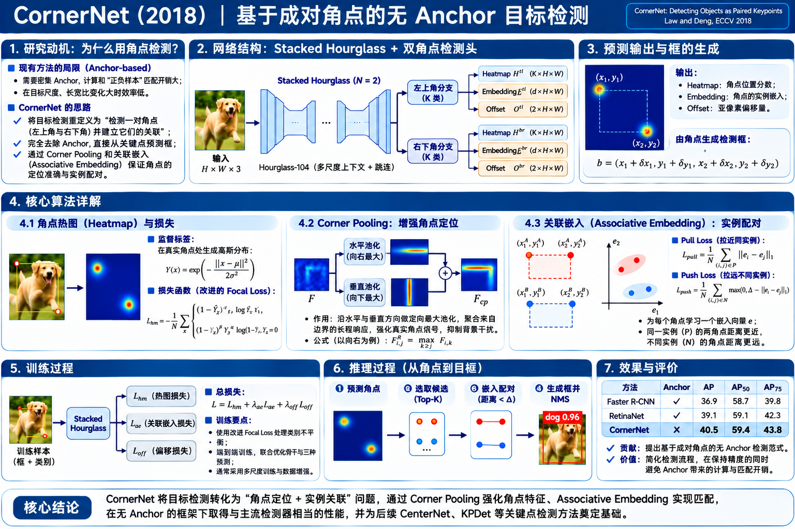

CornerNet 算法原理研究笔记
以前的检测器常问“这个 Anchor 里有没有目标？”；CornerNet 改问：目标框的左上角在哪里？右下角在哪里？这两个角点是否属于同一个实例？

研究问题：Anchor 已经能检测，为什么还要换一种定义？
核心不是再设计一套更好的默认框，而是改变预测对象。
Anchor-based：先假设框
SSD、RetinaNet 在特征图上布置大量不同尺度、宽高比的 Anchor。网络判断每个 Anchor 的类别，并预测 4 个位置调整量。
大量候选框与 GT 不匹配，正负样本极不均衡；尺度和宽高比是需要设计的先验，密集输出开销也不小。
CornerNet：先找到两个关键点
每个实例直接由 左上角 TL 与 右下角 BR 定义；网络学习角点的概率与归属，再配成完整边框。
不需要预设的 Anchor 尺度和形状，也不通过 RPN、RoI Pooling 对候选区域再次分类。
完整网络结构：一个 Hourglass 主干，两套角点预测模块
先认清网络每一步计算什么，再理解三个输出如何组成边界框。
Backbone：Stacked Hourglass
先降采样、再上采样，并通过 Skip Connection 结合全局上下文与局部细节；原版堆叠两组，网络深度 104。
两个 Head：TL / BR
不是先预测 TL 再预测 BR；两种角点并行从共享 Hourglass 特征中产生预测。
预测不是最终边框
Heatmap 只说明哪里有角点；只有完成同类筛选、Embedding 配对和 Offset 修正，才能确定实例框。
Heatmap：模型怎样学会“哪里是角点”？
从二维网格上的每个位置是否属于“某类目标的角点”出发理解。
3.1 类别热图到底预测什么？
以 80 类 COCO 为例，左上角预测 128×128×80，右下角也预测同样大小的 Heatmap。每个像素位置都给出某个类别角点出现的概率。它没有独立背景通道，也不是每个位置必须选且只能选一个类别的 Softmax。
交互 01 · 热图标签：移动 GT 角点、改变 Gaussian 半径
点击左侧 13×13 教学网格更改正样本位置；调节高斯宽度。只有中心是 y=1 的真正正样本；周围是 0<y<1 的降权负样本，不是额外的“多个正样本角点”。
这是训练标签的二维高斯。论文根据物体框大小选择半径，保证允许偏差下的框仍具备一定 IoU（论文设定阈值 0.7）；这里为便于理解用可调 σ 显示形状。
3.2 为什么不直接把所有背景都按同样权重惩罚？
预测角点即使偏离 GT 一两个网格，组成的边框仍可能非常接近真实框。因此原始 CornerNet 将 Gaussian 近邻位置作为“低惩罚负样本”，防止训练对轻微位移过于苛刻。它使用 Focal Loss 的一个变体，而非直接复制 RetinaNet 的二分类公式。
p 是预测角点概率，y 是上述训练目标热图，N 是图中实例数。论文中 α=2，β=4；y 接近 1 的邻域负样本因 (1−y)β 被显著降权。
Corner Pooling：角点处没有明显纹理，网络凭什么能找到？
这里的最大池化不是固定 2×2 邻域，而是“沿着两个方向聚合整条边界的证据”。
左上角 TL
从当前位置向右找物体上边缘证据，向下找物体左边缘证据。两路特征经过方向最大池化后逐元素相加。
右下角 BR
从当前位置向左找物体下边缘证据，向上找物体右边缘证据，再将两路结果相加。
交互 02 · Corner Pooling：点选位置，查看两个方向的 Max 与相加
真实网络先对特征做卷积，得到两路不同的特征图。为便于计算，这里每路只展示一个通道；实际对每个通道独立执行最大池化并逐元素求和。
注意：这是计算特征，不是直接从原始 RGB 图像寻找“最长的边”。被选中的是卷积后的各通道最大激活值；Max 运算仍可把梯度传给获胜位置。
4.1 它究竟帮助了什么？
假设目标是圆形，边界框左上角附近可能完全是背景。只看角点本地的卷积特征很难判断“这里恰好是某个框的角”。Corner Pooling 将右侧顶部边界与下方左侧边界的证据带到该位置，让模型依据两条边的交汇定位角点。
Embedding：找到许多左上角与右下角，怎样知道谁和谁是一对？
同类别不足以完成实例关联；网络额外学习“配对标签”的数值距离。
假设图中有两只同类动物：左上角集合有 A、B，右下角集合也有 A、B。如果只看类别与空间坐标，可能将 A 的左上角错误地接到 B 的右下角，生成一个巨大的假框。
原论文仅使用 1 维 Embedding：绝对数值本身没有类别语义，真正有用的是相同实例的角点 Embedding 是否接近。
交互 03 · 两个目标、四个角点：试着配错，再观察 Embedding 拒绝结果
蓝色表示 TL，橙色表示 BR；可选择两角进行配对，也可以改动右侧数值模拟网络预测。下方的 Pull/Push 是依据两实例四个 Embedding 计算出的教学数值。
Pull Loss：把同一个物体的两个角拉近
Push Loss：把不同物体的标识推远
Δ=1；若只出现一个实例，则不同实例的 Push 项为空，按 0 处理。
推理时要满足角点类别一致、几何位置有效、Embedding 距离不超过阈值等条件。这里的 Pairing 与“某个目标类别的概率”是两回事：类别回答“是什么”，Embedding 回答“是不是同一个”。
Offset：为什么有 Heatmap 还要预测 2 个偏移量？
128×128 热图中的一个整数格子对应原图约 4×4 像素，直接取整会损失角点位置精度。
假设原图某个角点的真实坐标为 (143,91)，输出步长为 4。它被映射到热图整数位置 (35,22)。如果直接恢复，将得到 (140,88)，误差是 (3,3) 像素。原版 CornerNet 因此回归角点在格子内的小数偏移。
s=4（这里的输入与输出大小近似 4 倍关系）。GT Offset 为 (0.75,0.75)；网络输出的是可训练的 ô。
交互 04 · 调整预测 Offset，看定位误差如何变化
在 GT 角点位置，通过 Smooth L1 比较预测的 (ôx,ôy) 与 GT 的格内小数值。不是对整张 128×128 的所有背景位置逐点回归。
完整训练：四类监督究竟分别在更新什么？
先从 GT 生成三个不同的目标，再理解为什么需要 Pull 与 Push。
7.1 四个 Loss 的监督目标与作用
| Loss | 预测量 | GT 从哪里来 | 解决的问题 | 监督位置 |
|---|---|---|---|---|
| Ldet | TL/BR 的 C 类 Heatmap | GT 框角点映射、邻域 Gaussian | 把角点找准，并缓解易负样本影响 | 整个热图；中心正样本，其余含高斯降权负样本 |
| Lpull | GT 实例的两个角点 Embedding | 同一 GT 框的 TL 与 BR | 同实例标识靠近 | GT 角点 |
| Lpush | 不同 GT 框的 Embedding 中心 | 同一图片的不同实例 | 不同实例标识分离 | GT 角点形成的实例对 |
| Loff | TL/BR 的二维格内偏移 | GT 角点的小数部分 | 修正整数热图网格定位误差 | GT 角点 |
这是原论文训练损失系数。请将 Heatmap、Embedding、Offset 分开理解，不要把它们想成单个 (x,y,w,h) 的回归损失。
7.2 原论文训练过程（按时间顺序）
训练时确实更新哪些参数？
Hourglass 主干、Corner Pooling 前后的卷积、Heatmap Head、Embedding Head 和 Offset Head 中的可学习参数。Max 操作本身没有权重，但梯度能传回最大激活位置。
论文重要配置
网络随机初始化，无额外 ImageNet 预训练；训练输入 511×511、输出 128×128，使用 Adam，并对两层 Hourglass 进行中间监督。这与许多预训练 ResNet 检测器不同。
完整推理：从两组 Heatmap 走到最终边界框
关键不是“有了热图就画框”，而是筛点、配对、过滤与去重。
8.1 简单数值例子：从两个角点算出一个检测框
左上角候选
热图格 = (12,18)，Offset = (0.25,0.50)
Embedding = 1.20
右下角候选
热图格 = (44,56)，Offset = (0.75,0.25)
Embedding = 1.42
因此得到框
(x₁,y₁,x₂,y₂)=(49,74,179,225)，分类分数 (0.94+0.86)/2=0.90。随后和其他框一起执行 Soft-NMS。8.2 为什么不能任意两两组合？
类别约束
左上角和右下角不能一个是 dog，一个是 person。
几何约束
必须满足 TL 的 x/y 均小于 BR 对应坐标，否则不是合法矩形。
实例约束
同类别也可能对应不同实例，必须再比较 Embedding 距离。
价值与边界：CornerNet 的贡献究竟是什么？
正确的历史定位应突出预测范式，而不是把它讲成“换了一个 Backbone”。
| 方法 | 基本预测单元 | 如何定位目标 | 如何处理多个实例 |
|---|---|---|---|
| YOLOv1 · 2016 | 网格 + B 个框 | 直接预测框坐标 | 同格共享类别概率，再做后处理 |
| SSD / RetinaNet | 密集 Anchor | 类别判断 + 相对 Anchor 的回归 | Anchor 数量与 NMS |
| CornerNet · 2018 | 左上角 / 右下角 | Heatmap + Offset | Embedding 配对 + Soft-NMS |
| 后续中心点式检测 | 目标中心点 | 中心热图 + 尺寸/偏移 | 通过中心点定义实例，减少角点配对需求 |
创新与可迁移价值
- 无需人工设计多尺度 Anchor / 宽高比，改变密集检测的表示方式。
- Corner Pooling 引入可解释的几何方向先验。
- Associative Embedding 将“找点”和“点属于哪个实例”分开学习。
- Heatmap 与 Offset 为后来 Keypoint-based 检测提供可借鉴的形式。
不能忽略的工程代价
- 两个角点都需可靠检测；其中一个漏检就难以组成完整框。
- Embedding 错配会生成虚假的大矩形。
- 角点本身可能落在背景区，需要额外的长程特征聚合。
- 原版堆叠 Hourglass-104，计算成本较高，并非轻量级实时范式。
9.1 原论文的结构消融：Corner Pooling 真的有效吗？
| 消融配置 | COCO AP | AP₅₀ | AP₇₅ | 结论 |
|---|---|---|---|---|
| 去除 Corner Pooling（控制参数量） | 36.5 | 52.0 | 38.9 | 不具方向池化的角点定位性能更弱 |
| 使用 Corner Pooling | 38.5 | 54.1 | 41.1 | AP +2.0；更明显改善严格 IoU |
以上来自原论文 Corner Pooling 消融设置，不应与主结果 42.1 AP 当作同一训练配置直接比较。
最后检查：能否从输入到输出讲清这整个模型？
五个问题全部能回答，就建立了完整算法机制，而不只是记住名称。
Hei Law, Jia Deng. CornerNet: Detecting Objects as Paired Keypoints, ECCV 2018. 原始论文（CVF PDF） · arXiv · 原论文代码。本文教学示意中的个别数值为自造，用于讲解计算关系，与论文评测结果严格区分。